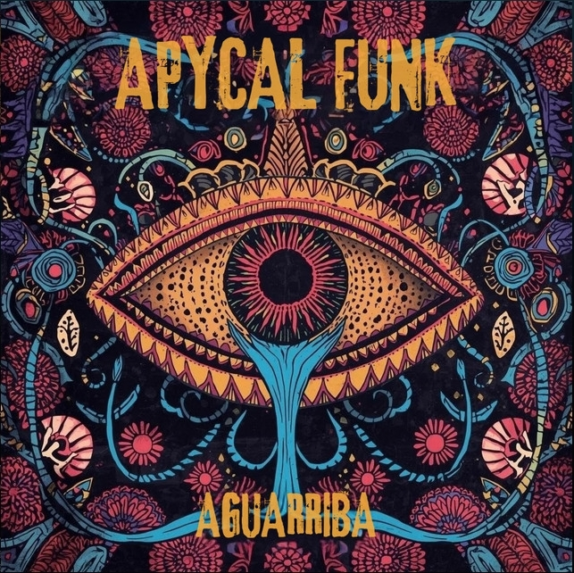
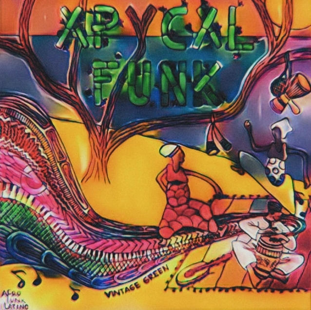
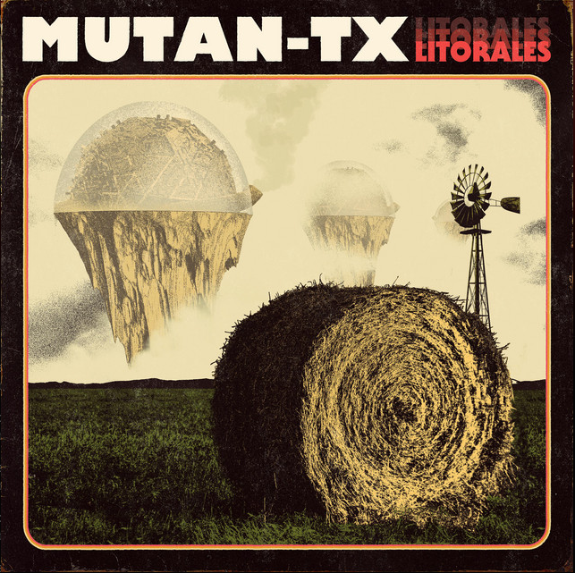
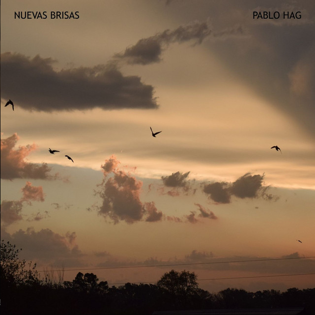
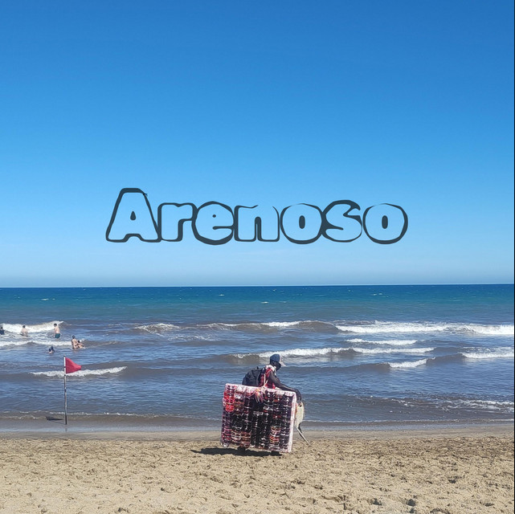
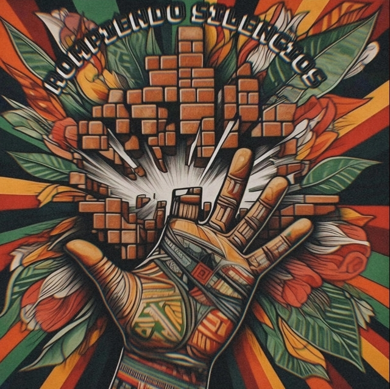

Servicios
Producción
Arreglos, estructura, sonido y dirección artística.
Grabación
Voces e instrumentos con flujo rápido y prolijo.
Mezcla & Master
Claridad, impacto y nivel listo para plataformas.
Producciones
-

Apycal Funk - Aguarriba
Grabación, mezcla y Master
-

Apycal Funk - Vintage Green
Grabación, mezcla y Master
-

Mutan-tx - Litorales
Grabación
-

Pablo Hag - Nuevas Brisas
Grabación, mezcla y Master
-

Apycal Funk - Arenoso
Grabación, mezcla y Master
-

Apycal Funk - Rompiendo Silencios
Grabación, mezcla y Master